สุสานเก่าหลังเนิน
ดูบนแผนที่และวิธีไป วางแผนฟาร์ม
ทุ่งในป่ากองไฟ · Lv 28–38
ชั้นล่าง / ดันเจี้ยน
เดินต่อไป
มอนในแมพ (8)
| มอน | Lv | ธาตุ | โซน |
|---|---|---|---|
| โครงกระดูกพลธนู | 28–36 | อมตะ | สุสานหลวงเก่า |
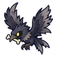 อีกาสุสาน | 28–36 | มืด | สุสานหลวงเก่า |
| แม่มดเทียนไข | 30–38 | ไฟ | สุสานหลวงเก่า |
| โลงผีระเบิด | 30–38 | อมตะ | สุสานหลวงเก่า |
| 30–38 | วิญญาณ | สุสานหลวงเก่า | |
| ผีขุดหลุม | 30–38 | วิญญาณ | สุสานหลวงเก่า |
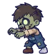 ซอมบี้ชาวนา · ร่างราเขียว | 30–38 | อมตะ | สุสานหลวงเก่า |
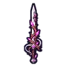 วิกเตอร์ นักดาบหลุมศพ บอสผู้ถูกรากสิง | 40–40 | อมตะ |
อุปกรณ์ที่ดรอปในแมพนี้
| ของ | โอกาสสูงสุด |
|---|---|
| ดาบเรียวรากหลุมศพ | 0.5% |
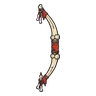 ธนูกระดูกทหาร | 0.25% |
| 0.25% | |
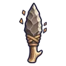 มีดคู่หินไฟ | 0.25% |
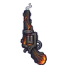 ปืนพกคู่ถ่านคุ | 0.25% |
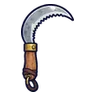 เคียวคู่ชาวไร่ | 0.25% |
| ไม้เชิดหุ่นช้อนส้อม | 0.25% |
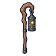 ตะเกียงสังกะสีเจาะลาย | 0.25% |
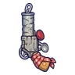 ปืนพกคู่กระป๋อง | 0.25% |
| เกราะยามค่าย | 0.15% |
| ชุดวิญญาณเทียน | 0.15% |
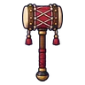 ค้อนยักษ์กลองศึก | 0.12% |
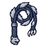 แส้หมาป่าเงาจันทร์ | 0.12% |
| 0.12% | |
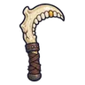 เคียวคู่ขากรรไกร | 0.12% |